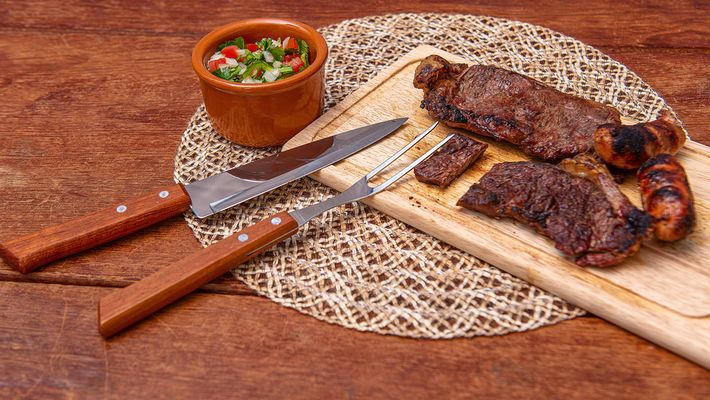

Receita de Churrasco Gáucho

Imagem do prato já finalizado.
Ingredientes
- Um bom pedaço de carne bovina, que pode ser costela, picanha ou etc ...
- Sal grosso à vontade
- Um ou vários espetos (conforme a fome ou os trocos do vivente)
- Fogo de lenha, de gás, carvão
Modo de Preparo
- Espetar de pedaço a pedaço no espeto, passar o sal e colocar no fogo. Mais ou menos a uma distancia de 25 cm.
- Se houver pressa ou muita fome, come-se somente chamuscada, meio a meio, correndo sangue (como eu gosto).
Mas se não houver pressa e, tiver gente de muita frescura, assa-se até ficar esturicada.
- Bom apetite!.
Breve História do Prato
O churrasco chegou ao Brasil durante o século XVII, junto com os Setes Povos das Missões — sociedade fundada por jesuítas no Rio Grande a fim de reunir indígenas na missão de catequizá-los.
No entanto, tal comunidade foi devastada no ano de 1768, deixando como testemunho um exemplo de comunidade.